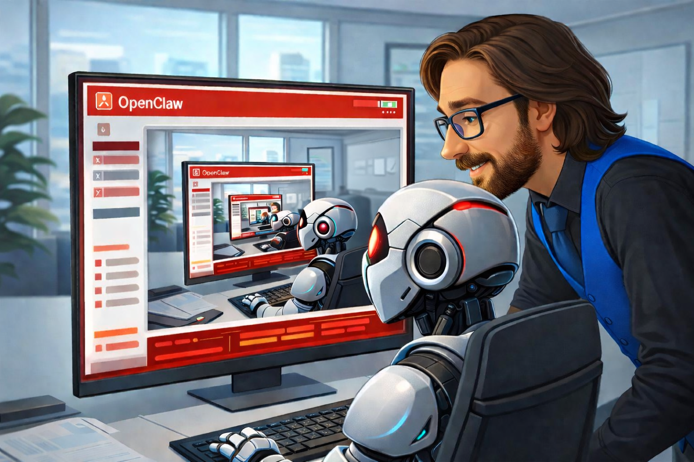

I’ve spent nearly two weeks inside OpenClaw. That wasn’t the plan. I originally intended to explore the framework for a few days, write about it, and move on. Instead, the deeper I went, the more layers appeared. Most of the early work was not glamorous. Setting up memory systems. Making sure agents actually completed the tasks they were assigned. Running diagnostics. Debugging multi-agent coordination. Watching workflows break and tracing the problem back through configuration files and logs. None of that makes for exciting demos. But if systems like this are going to matter in the real world, those foundations matter more than anything else.
The turning point for me came when I started exploring memory systems more seriously.
Most people assume AI memory means remembering conversations. That’s the simplest version of it. The more interesting systems store something deeper. They store experience.
What worked. What failed. What sequence of steps solved the problem.
That information can be archived and retrieved later when the system encounters something similar again. Instead of starting from zero each time, the system begins with knowledge from previous attempts.
The system doesn’t just remember what happened yesterday. It remembers what it learned. And when it encounters the same situation again, it can attempt a better approach.
That small shift changes how the system behaves. Instead of acting like a tool responding to commands, it begins acting more like a workflow that improves itself over time.
While exploring memory architectures, I came across the work of Nat Eliason.
He has been building an agent system called Felix through the platform at felixcraft.ai. According to his documentation, Felix generated more than $150,000 in revenue within about a month after being challenged to start a business.
Whether that exact number holds up long term isn’t really the point. What mattered to me was the realization that I had been thinking far too small. Up to that point my focus had been on building a stable environment. Making sure the system could remember things, complete tasks, and coordinate multiple agents without falling apart.
Important work, but still small compared to what systems like this might eventually become. Agent frameworks are not just productivity tools. They are early attempts at systems that can coordinate work.
The simplest way I’ve found to explain this is what I call the director model.
Instead of humans performing every step of a task themselves, the person defines the objective and supervises the system performing the work.
The human becomes a director. The system coordinates the activity. Tools and machines carry out the tasks.
Imagine a construction project operating under this structure. Instead of multiple operators running every machine individually, a single director oversees the job site while systems coordinate the graders, excavators, and backhoes according to the plan.
The director watches the project and adjusts when necessary. The machines do the work.
Right now systems like OpenClaw mostly operate in digital environments. They write code, retrieve information, organize files, and coordinate tasks across software tools.
But the structure doesn’t stop at software. Once robotics enters the picture, the same coordination model could extend into physical work as well.
At the moment, frameworks like OpenClaw are still experimental. Over the past two weeks I’ve spent time fighting with terminal commands, adjusting configuration files, and troubleshooting issues caused by system updates. At one point I spent nearly a week working through command line setups before realizing the web interface handled many tasks more easily.
Even the interface itself can be unpredictable.
Yesterday the Claude integration stopped working. Today that was fixed, but now some of the skills are no longer visible in the interface. This is not a system you can install today and depend on for mission-critical operations.
Not yet.
But experimental systems often look like this early in their life.
If systems like this continue improving, the structure of work will start to change.
People will spend less time operating tools directly and more time designing systems that operate those tools on their behalf.
Some industries are already seeing the early edges of this shift. Construction, healthcare, manufacturing, logistics, and service industries are all experimenting with automation and intelligent systems. Technology leaders and researchers have been warning about this transition for several years now.
This isn’t about panic or hype. It’s about preparation.
The people who learn how to work with these systems will have an enormous advantage over those who ignore them.
After nearly two weeks inside OpenClaw, one realization keeps returning.
These systems will keep improving. They will store more experience. They will coordinate more tools. They will execute more complex workflows.
The infrastructure will get faster. Hardware will improve. Memory systems will expand. Processing power will continue increasing.
Eventually the limiting factor may not be the machines at all. It won’t be the computer the system runs on. It won’t be RAM. It won’t be electricity, water, or processing speed.
It will be us.
The bottleneck will be human imagination, human planning, and human ability to design systems that make use of what the technology can already do. Agent frameworks like OpenClaw are still early, sometimes unstable, and often frustrating to work with. But they point toward something important.
A future where the person who understands how to direct these systems effectively may be able to accomplish what once required entire teams.
And in that world, the most valuable skill may not be operating machines at all.
It may be knowing how to guide them.
Dr.WinMac explores the infrastructure and automation changes that affect everyone, explained without jargon.
Back to Blog